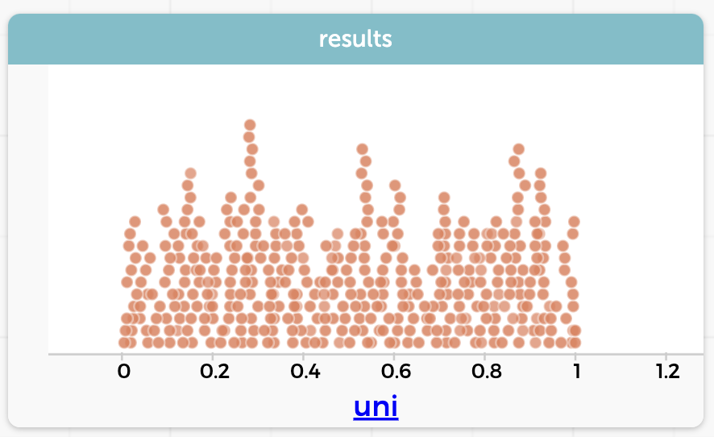

Simmer Guide
Prediction
Here are a few problems under development. These are all problems where you look at a program and try to predict what its output will look like.
What makes a good problem for this tool? Let us know!
Adding two dice…with negative numbers
The live example below shows a program. Before you run it, predict:
- What will be the minimum and maximum values of
sum? - What will the mean of
sumbe?
Explain your two answers!
Adding two normals
The live example below shows a program that adds two numbers:
Norm1is a random Normal variable with mean 0 and SD 1.Norm2is a random Normal variable with mean 10 and SD 1.
What do you know about the distribution of sum? Before you run the program,
- Sketch what you think that distribution will look like.
- What do you think the mean of
sumwill be? - Will the SD of
sumbe- a lot less than 1,
- a bit less than 1,
- close to 1,
- a bit more than 1, or
- a lot more than 1?
Explain your responses to the tasks.
Uniform squared
The live example below shows a program. The variable uni is uniformly distributed between 0 and 1. The illustration at right shows the distribution of uni from one run.

The variable square is uni squared.
Before your run the program, sketch what you think the distribution of square will look like.
Explain your reasoning, then check your work!
Adding two dice…with a twist
The live example below shows a program. Predict what the graph of sum will look like.
It might help to imagine, first, the distributions of die1 and die2.